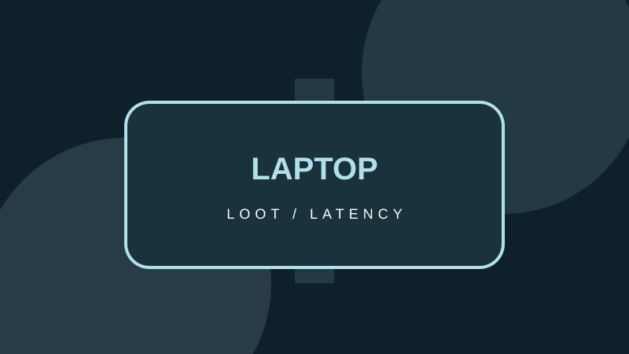

Compare the graphics processor, thermal design and screen before paying for branding.
Prioritize the GPU and cooling
A laptop GPU's power limit and cooling system matter alongside its model name. Two laptops using a similarly named GPU can perform differently.
Balance RAM, storage and display
Aim for enough memory to run your games and background apps comfortably. Check whether storage or RAM can be upgraded and whether the screen has good response times.
Look beyond marketing claims
Read independent sustained-performance tests and check noise, surface temperatures, battery life and repairability.
Budget for the whole setup
A stand, a mouse and external storage may be more useful than paying for flashy extras. Consider warranty and local service coverage.
Final takeaway
Start with one small change, check whether it works for you, and build on what you learn. Gaming should remain enjoyable and within your budget.